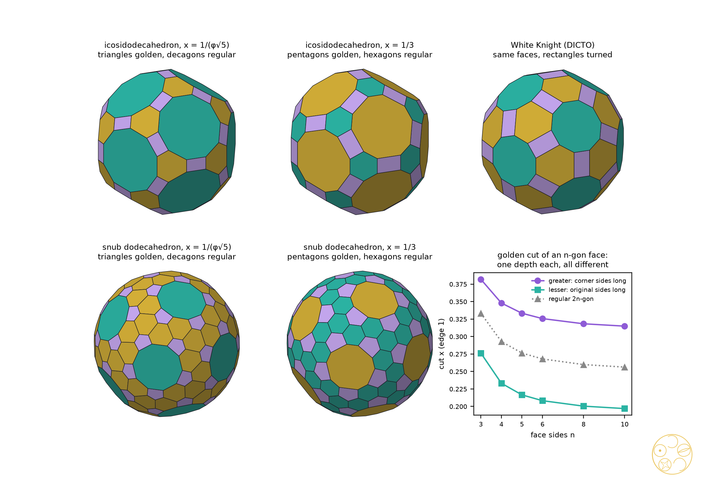
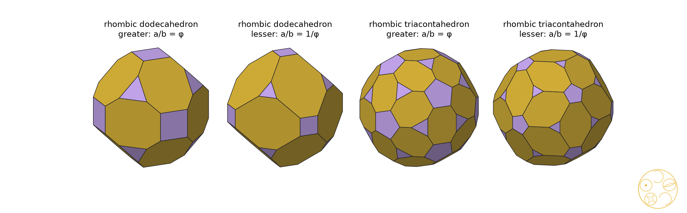
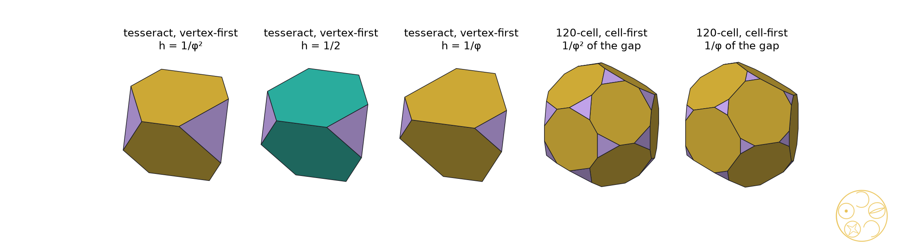

Which other solids have golden cuts? Archimedean, Catalan and Kepler–Poinsot solids, and the golden pairs as sections of the regular four-dimensional solids
Cut every corner off a regular solid by the same golden amount and each face keeps one golden proportion; #88 showed there are exactly two such cuts for each regular solid. Here we try the same on the other famous families. Solids with two kinds of face never manage it, because each kind of face wants its own depth. Two solids come close: cut at the right depth, every face of the icosidodecahedron and of the snub dodecahedron is either golden or perfectly regular. The rhombic dodecahedron and the rhombic triacontahedron have their own golden pair, and the four star solids of Kepler and Poinsot have theirs. And the golden tetrahedra and dodecahedra of #88 turn out, like the octahedral and icosahedral pairs, to be slices of four-dimensional regular solids at golden heights.
We keep #88's definitions [1]. A solid with unit edges, regular faces and all corners on one sphere is cut at x when every corner is cut off by the plane perpendicular to the line from the centre to that corner; on such a solid the plane meets every edge at that corner at the same distance x (the edges at a corner all make the same angle with that line). An n-gon face then becomes a 2n-gon whose sides alternate between the corner sides cnx, with cn = 2 cos(π/n), and the original sides 1 − 2x. The face is golden when the longer over the shorter is φ, which happens at exactly two cuts:
xG(n) = φ / (cn + 2φ) (corner sides long, greater), xL(n) = 1 / (φcn + 2) (original sides long, lesser).
A triangle face cut this way is a truncated triangle (angles 120°, sides alternating). For the Platonic solids every face has the same n, and #88's Theorem 2 follows. Our scripts first reproduce #88's ten cuts exactly (formula and #88's table) and rebuild each one, every face of ratio φ.
Proof. Both xG and xL fall strictly as cn grows, and cn grows with n, so different n give different values within each list. xG(n) = xL(m) means cn = φ²cm ≥ φ² > 2 > cn, impossible; xG(n) > xL(n) since φ²cn > cn. Checked exactly for all 66 pairs. Every one of the 62 one-kind cuts of the 14 solids was built and checked to be a convex truncation with the expected faces. ∎
At xG(n) another face kind m has ratio (corner over original) φcm/cn, at xL(n) it has cm/(φcn). It is 1, a regular 2m-gon, exactly when cn = φcm or cm = φcn.
Proof. cm = φcn with n ≥ 4 would need cm ≥ φ√2 > 2; with n = 3 it needs cos(π/m) = φ/2, so m = 5. The rhombicosidodecahedron, the only other Archimedean solid with triangles and pentagons, fails on its squares (ratio √2 or 1/√2). ∎ Exact check from coordinates in Q(√5): the icosidodecahedron at x = 1/(φ√5) has 60 edges of length x and 120 of length φx, golden rectangles at the corners (the corner figure of the icosidodecahedron is a golden rectangle at every depth) and volume 13/2 + 97√5/30; at x = 1/3 it has 120 edges 1/3 and 60 edges φ/3 and volume 395/54 + 17√5/6.
| n | xG(n), corner sides long | xL(n), original sides long | solids with n-gons |
|---|---|---|---|
| 3 | (3 − √5)/2 = 1/φ² ≈ 0.381966 | (5 − √5)/10 = 1/(φ√5) ≈ 0.276393 | tT, CO, tC, RCO, sC, ID, tD, RID, sD, ESG |
| 4 | (√10 + 2√5 − 3√2 − 2)/4 ≈ 0.347943 | (√10 + 3√2 − 2√5 − 2)/4 ≈ 0.233196 | CO, tO, RCO, tCO, sC, RID, tID, ESG |
| 5 | 1/3 | (7 − √5)/22 ≈ 0.216542 | ID, tI, RID, sD |
| 6 | (2 + √15 + 6√5 − 7√3)/22 ≈ 0.325683 | (2 + √15 + 7√3 − 6√5)/22 ≈ 0.208224 | tT, tO, tCO, tI, tID |
| 8 | φ/(√(2+√2) + 2φ) ≈ 0.318271 | 1/(φ√(2+√2) + 2) ≈ 0.200411 | tC, tCO |
| 10 | φ/(√(φ√5) + 2φ) ≈ 0.314904 | 1/(φ√(φ√5) + 2) ≈ 0.196940 | tD, tID |
Table 1. The golden depth of each kind of face (edge 1). Every Archimedean solid has 0 cuts making all faces golden; its one-kind golden cuts are the rows of its face sizes. tT truncated tetrahedron, CO cuboctahedron, tC truncated cube, tO truncated octahedron, RCO rhombicuboctahedron, tCO truncated cuboctahedron, sC snub cube, ID icosidodecahedron, tD truncated dodecahedron, tI truncated icosahedron, RID rhombicosidodecahedron, tID truncated icosidodecahedron, sD snub dodecahedron, ESG elongated square gyrobicupola. Golden-or-regular cuts: ID and sD only (Theorem 2).

White Knight. The icosidodecahedron at x = 1/(φ√5) has White Knight's face pattern exactly: 12 regular decagons, 20 truncated triangles of ratio φ and 30 golden rectangles. It is not White Knight. In White Knight the long sides of each truncated triangle meet the rectangles and the short sides meet the decagons (120 short and 60 long edges); in the cut icosidodecahedron it is the other way round (60 short, 120 long). White Knight is the 120-cell section of #65; the cut icosidodecahedron was not found among the sections (Section 5).
The corners of a Catalan solid fall into two or three orbits, and its faces are not regular. At each corner the edges are alike (turned into one another by the symmetries fixing the corner), so a plane perpendicular to the centre–corner line cuts them all at the same distance yo, which may differ between orbits o. We call a face golden when it becomes a 2n-gon whose corner sides all have one length a and whose original sides all have one length b, with a/b = φ or 1/φ. (The angles cannot all be equal, since the faces are not regular.) The conditions are linear in the yo, a and b. Two other definitions are special cases: the same cut depth at every corner, and every plane at the same distance from the centre.
Proof. For a rhombus of side 1 with acute angle α, the corner sides are 2ysharp sin(α/2) and 2yblunt cos(α/2), and each original side is 1 − ysharp − yblunt. Setting the corner sides equal to a gives b = 1 − aK with K = (1/sin(α/2) + 1/cos(α/2))/2, one free parameter; a = φb gives b = 1/(1 + φK) and b = φa gives b = 1/(1 + K/φ). For faces with two or three edge lengths (triangles, kites, pentagons) the equations fix a and b, and solving them exactly over the field of the solid (sympy, from exact coordinates in Q(√2) or Q(√5); the two pentagonal solids in floating point) gives the stated signs and ranks. Both golden cuts of each rhombic solid were checked exactly corner by corner. ∎
| solid | K | greater: a, b (edge 1) | lesser: a, b | faces after the cut |
|---|---|---|---|---|
| rhombic dodecahedron (cos α = 1/3) | (2√3 + √6)/4 | 0.477001, 0.294803; volume 2.94509 | 0.322952, 0.522548; volume 3.03758 | 12 octagons, 6 squares, 8 triangles |
| rhombic triacontahedron (tan(α/2) = 1/φ) | φ√(2 + φ)/2 | 0.463634, 0.286541; volume 11.9873 | b = 2/(2 + √(2 + φ)) = 0.512543, a = 0.316769; volume 12.2076 | 30 octagons, 12 pentagons, 20 triangles |
Table 2. The four golden rhombic cuts. Every corner face is regular with side a. Cuts along the edges: ysharp = a/(2 sin(α/2)), yblunt = a/(2 cos(α/2)): rhombic dodecahedron 0.413095, 0.292102 (greater) and 0.279685, 0.197767 (lesser); rhombic triacontahedron 0.440942, 0.272517 and 0.301265, 0.186192.

The four regular star solids have regular faces {p}, equal edges and corners on one sphere, and every edge at a corner makes the same angle with the centre–corner line (checked), so the setting of Section 1 applies unchanged with c = 2cos(π/p). For the pentagram, p = 5/2 and c = 2cos 72° = 1/φ.
The pentagram's two cuts are the conjugates of the pentagon's: replacing √5 by −√5 turns φ into −1/φ, c5 = φ into c5/2 = 1/φ up to sign, the pentagon's lesser cut (7 − √5)/22 into the pentagram's greater cut (7 + √5)/22, and leaves 1/3 in place (greater for the pentagon, lesser for the pentagram). The deeper pentagram cut, (7 + √5)/22 ≈ 0.4198, goes beyond the crossing points of the pentagram (at 1/φ² ≈ 0.382 from each tip); the lighter one stops short of them. All eight results are star polyhedra in the usual sense of uniform polyhedra (faces are polygons that may cross each other), like the uniform truncated great dodecahedron and great icosahedron; none bounds a single region, so none is a solid one could build as a block, and none can be a section of a four-dimensional solid, as sections are convex.
We sliced the 5-, 8-, 16-, 24-, 600- and 120-cell in their vertex-, edge-, face- and cell-first directions at 2,400 heights each and compared every section, scale-free, with 77 solids: #88's ten, White Knight, all 62 one-kind cuts of Section 2 (including the four of Theorem 2) and the four rhombic cuts (the method and code of #88's search). The search finds #88's sections again (Icosaxes and Unborn Axes in the 24-cell; the golden icosahedra and White Knight in the 120-cell; Icosaxes in the 120-cell, vertex-first), and two golden pairs that #88 did not state. Both were confirmed exactly in Q(√5) (all pairwise squared distances over their sum, sorted, equal).
Proof of (a). The section is the tetrahedron xi ≤ 1 (corners with three coordinates 1, edge √2(4 − 2h)) cut at its corners by xi ≥ −1, which meets each edge at the fraction (1 − h)/(2 − h) from the corner. This equals 1/φ² exactly when h = (φ² − 2)/(φ² − 1) = 1/φ², and 1/(φ√5) = 1/(φ + 2) exactly when h = φ/(φ + 1) = 1/φ. (b) and (c): exact slices from the #65 atlas code, compared exactly. ∎
So the golden heights 1/φ², 1/2, 1/φ of #88's Theorem 3 come back: in the tesseract, the 24-cell and the 120-cell, measured across one gap between corner layers, the golden pair sits either side of the Archimedean truncation. With #88, four of the five Platonic golden pairs are now sections: tetrahedra (tesseract, 120-cell), octahedra (24-cell), icosahedra and dodecahedra (120-cell). The golden cubes were not found.

The new solids. None of the solids of Sections 2 and 3 was found as a section in these directions (float search; not a proof that none exists). For the cut snub solids there is a reason: a section's symmetry contains the stabiliser of its direction, and by Steinberg's theorem that stabiliser is generated by the reflections it contains. If it contains the rotations of the snub dodecahedron (or snub cube), it is the full group with mirrors, so the section is not chiral. A cut snub can therefore only be a section in a direction whose stabiliser is smaller, a case the search does not reach.
A light, constructive check only (positive cases; no tests that pieces fail to fill). Cut every cell of a face-to-face tiling the same way, the same distance along every edge at each kind of corner. The caps cut from the cells round a tiling corner then close up into one hole, and cut cells plus holes fill space. We checked each hole by volume (number of cells at the corner × cap volume = volume of the hole):
These are the golden members of fillings known since Andreini [5]. We saw no new pair that fills space on its own the way Icosaxes and Unborn Axes do.
Known. Truncation at any depth is classical. Zefiro [2] cut the icosidodecahedron with a rhombic triacontahedron and marked the stages where the pentagons become regular decagons (d = (4τ + 3)/10) and where the triangles become regular hexagons (d = (τ + 4)/6). With d/R = 1 − x/(2φ²) these are exactly our x = 1/(φ√5) and x = 1/3 (0.947214 and 0.936339), so the two icosidodecahedron cuts of Theorem 2 are Zefiro's; we did not find their golden faces stated there. Zefiro [3] also cut the cubic Archimedean solids with the rhombic dodecahedron, cube and octahedron, looking for regular faces, with no golden ratios. The semi-uniform truncated octahedra are Koca et al.'s [4]; the section series are Boole Stott's [6].
New within these checks. The rule of Theorem 1 (golden cuts need one face size), the golden-or-regular rule of Theorem 2, the Catalan result of Theorem 3 with the four golden rhombic cuts, the Kepler–Poinsot golden cuts and their conjugate pairing, the tesseract and 120-cell sections of Theorem 5, and the face swap that tells the cut icosidodecahedron from White Knight. Where an earlier source describes one of these solids, it stays in DICTO's family, found independently, with the source credited.
Sources checked (3 November 2026). Reference library on compute-host (cited/ manifest and papers/ listing: truncation, Archimedean, Catalan, semi-uniform, Kepler–Poinsot, golden; hits: Koca et al. 2015, Andreini 1905). Web: golden-ratio truncation of Archimedean solids; truncated icosidodecahedron with golden rectangles; truncated rhombic dodecahedron and triacontahedron; Zefiro's two 2011 papers; Koca's quaternionic H3 orbit papers; Conway–Hart truncation (free depth, no golden criterion found).
Neutral labels only; names are DICTO's to give.
| neutral label | cut | note |
|---|---|---|
| golden cut icosidodecahedron (lesser) | x = 1/(φ√5) | 20 truncated triangles of ratio φ, 12 regular decagons, 30 golden rectangles; Zefiro's regular-decagon stage. Its truncated triangles have ratio φ, as in the DICTO-GTT-Solids. |
| golden cut icosidodecahedron (greater) | x = 1/3 | 12 golden truncated pentagons, 20 regular hexagons, 30 golden rectangles; Zefiro's regular-hexagon stage |
| golden cut snub dodecahedron (lesser), left and right | x = 1/(φ√5) | 80 truncated triangles of ratio φ, 12 regular decagons, 60 corner pentagons; chiral |
| golden cut snub dodecahedron (greater), left and right | x = 1/3 | 12 golden truncated pentagons, 80 regular hexagons; chiral |
| golden cut rhombic dodecahedron (greater, lesser) | Table 2 | fill space with cubes and tetrahedra |
| golden cut rhombic triacontahedron (greater, lesser) | Table 2 | |
| golden cut great dodecahedron, great icosahedron, small and great stellated dodecahedron (greater, lesser) | Proposition 4 | star polyhedra, not solids |
studies/2026-11-03-golden-cuts-beyond-plato: gcb.py and gcb_exact.py (solids, cuts, exact duals); s1_platonic_archimedean.py (#88 reproduced, Theorems 1–2; 235 checks), s2_catalan.py and s2b_rhombic_exact.py (Theorem 3; 51 + 12 checks), s3_kepler_poinsot.py (Proposition 4; 24 checks), s4_sections4d.py (the search; float), s5_exact4d.py (Theorem 5, exact; 7 checks), s6_spacefill.py (Section 6; 10 checks), figs.py. All checks pass. Computed on compute-host.